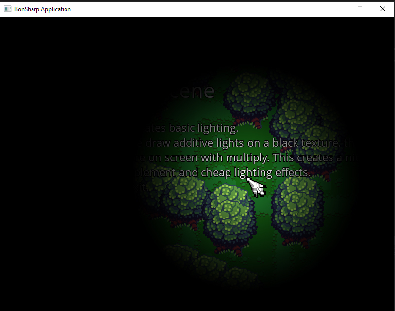

Lights
This scene implements basic 2d lighting by rendering additive lights onto a render target. It works like this:
- We create an empty texture in the size of the screen we render to.
- Every frame we clear that texture into black color.
- We then render lights on it using additive blending. This will make areas affected by lights brighter.
- At the end, we render this texture at the top of the screen with multiply blending. This will make dark areas black and lit areas tinted to the color of the light at this position.

using System;
using BonEngineSharp.Defs;
using BonEngineSharp.Assets;
using System.Collections.Generic;
using BonEngineSharp.Framework;
/// <summary>
/// Show basic lights scene.
/// </summary>
class BasicLightsScene : BonEngineSharp.Scene
{
// lights map and single light texture
private ImageAsset _lightsMapTexture;
private ImageAsset _lightImage;
// window size
PointI _windowSize;
/// <summary>
/// On scene load.
/// </summary>
protected override void Load()
{
// load engine config
Game.LoadConfig("config.ini");
// load assets
_lightImage = Assets.LoadImage("gfx/light.png", ImageFilterMode.Nearest);
// get window size
_windowSize = Gfx.WindowSize;
// create lights texture
_lightsMapTexture = Assets.CreateEmptyImage(_windowSize);
}
/// <summary>
/// Do updates.
/// </summary>
protected override void Update(double deltaTime)
{
// if user click 'exit' action, exit game
if (Input.Down("exit"))
{
Game.Exit();
}
}
/// <summary>
/// Draw scene.
/// </summary>
protected override void Draw()
{
// clear screen
Gfx.ClearScreen(Color.Cornflower);
// DRAW YOUR ACTUAL SCENE HERE..
// clear lights texture to black
Gfx.RenderTarget = _lightsMapTexture;
Gfx.ClearScreen(Color.Black);
// draw a single light at the mouse position
Gfx.DrawImage(_lightImage, Input.CursorPosition, new PointI(500, 500), BlendModes.Additive, RectangleI.Empty, PointF.Half);
Gfx.RenderTarget = null;
// draw lightsmap on screen
Gfx.DrawImage(_lightsMapTexture, PointF.Zero, BlendModes.Multiply);
}
}